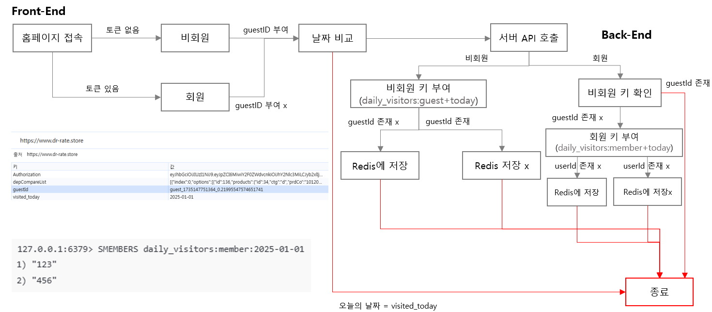
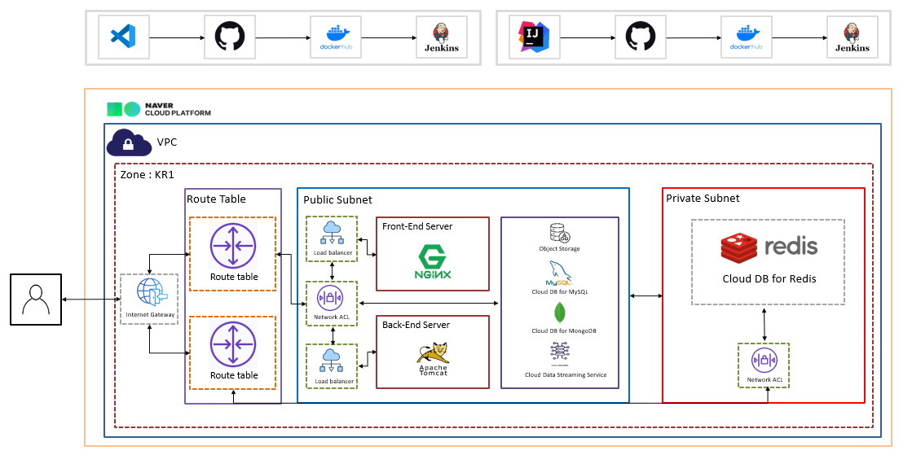
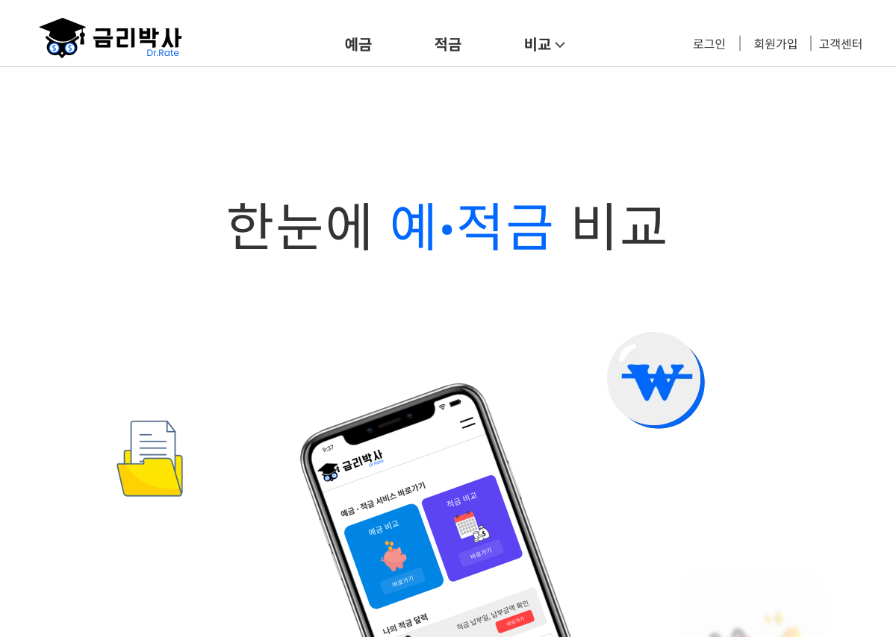
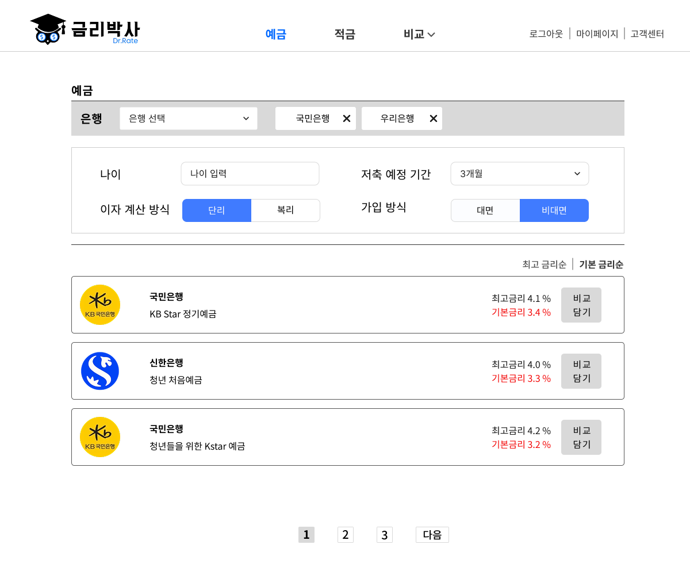
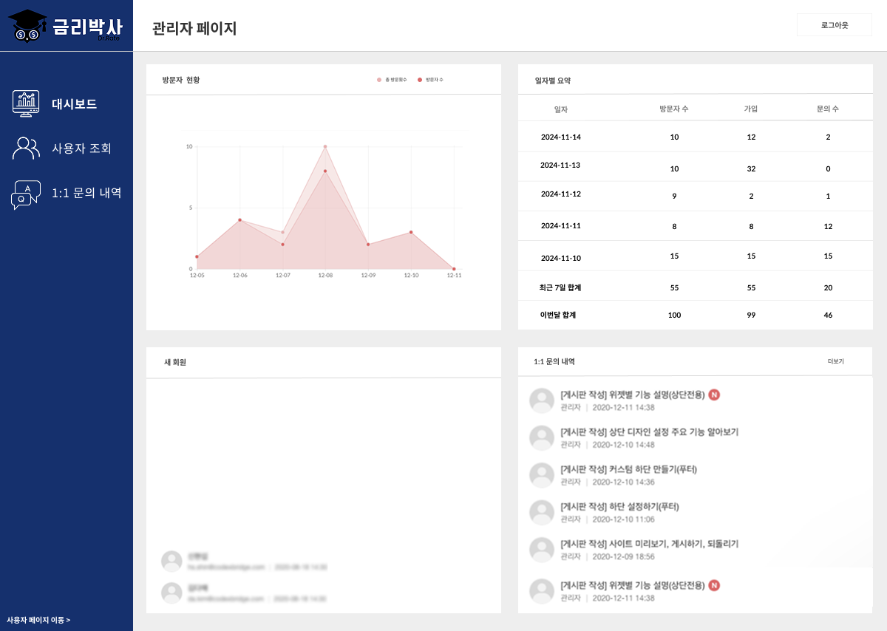
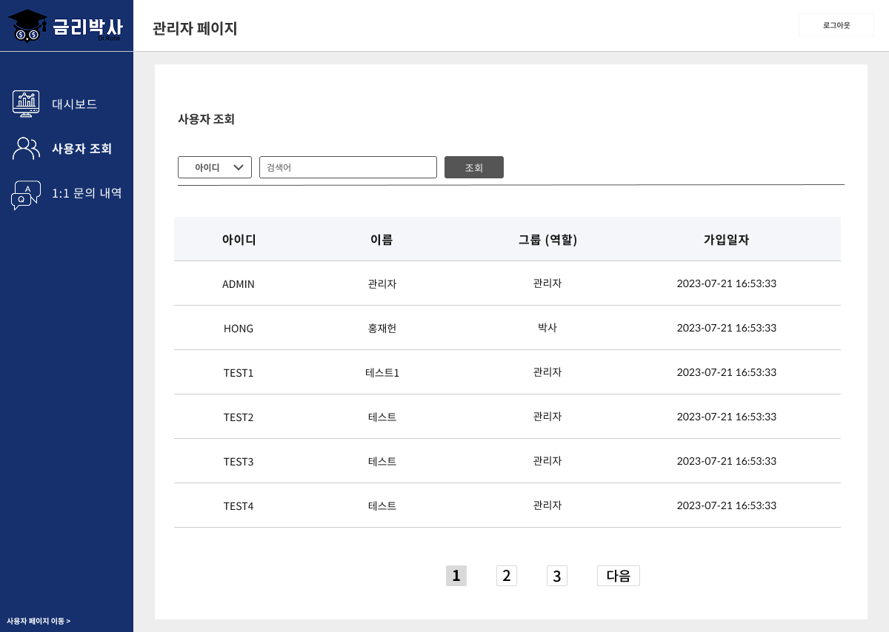
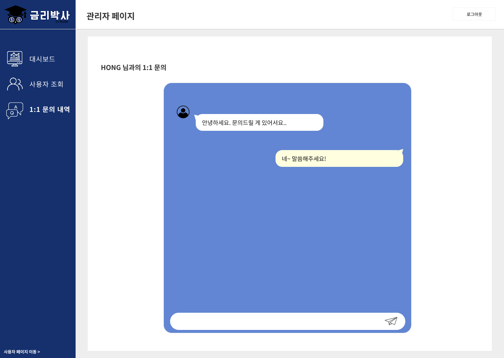

💡 Topic
- 네이버 클라우드 캠프 Final 프로젝트
-
주제: 다양한 은행의 예금 및 적금 상품을 검색, 비교할 수 있는 금융 상품 플랫폼
- 사용자 서비스와 관리자 서비스를 통해 금융 상품의 등록, 관리 및 사용자 맞춤형 서비스를 제공
🛠 Tech Stack
-
Front-End
HTML,SCSS,Javascript,React-
Tools
npm(패키지 매니저)Vite(번들러)Axios(HTTP 비동기 통신 도구)Jotai(상태 관리 도구)Node.js v20
-
Back-End
Java,Spring Boot(MVC, Spring Data JPA, Spring Security)Apache Kafka
-
Database
MySQL,MongoDB,Redis
-
Deploy
-
NCP- Object Storage
- Cloud DB for MySQL / Cloud DB for MongoDB / Cloud DB for Redis
- Cloud Data Streaming Service
- Application Load Balancer / Certificate Manager
- AutoScaling / Server Image / Init Script
Docker,DockerhubJenkins
-
🧑🏻💻 Team
- Front-End + BackEnd 8명
🤚🏻 Part
- 역할 : 팀장
- Back-End Github 형상 관리
- Back-End 파트 프로젝트 구조 설계
- Figma를 통한 관리자 페이지 UI 설계
-
관리자 페이지 구현
-
Front-End (전체 페이지 모바일 반응형 고려한 UI 설계)
-
관리자 대시 보드 페이지
- 방문자 현황, 일자별 요약, 신규 회원 조회, 1:1 문의 내역 조회 구현
-
방문자 현황
chart.js사용하여 방문자 현황을 가시적으로 구현
-
일자별 요약
- 회원/비회원 방문자 수, 총 방문자 수, 신규 가입자 수 컬럼으로 조회
- 하루 단위로 오늘 포함 최근 5일 조회
- 최근 일주일 현황, 이번 달 합계 종합 조회
- 신규 회원: 신규 회원 조회
- 1:1 문의 내역: 1:1 문의 내역 조회
-
사용자 정보 조회 페이지
- page size 4로 페이징 처리
- 기본 조회 순서: 신규 회원 순
- 이메일과 이름으로 검색 가능
-
관리자 1:1 문의 내역 조회 페이지
- 방 번호, 이름, 이메일로 검색 가능
-
관리자 1:1 문의 상담 페이지
- 카카오톡 모바일 UI와 유사하게 구현
- 스크롤 기반 페이징 처리(위로 스크롤 시 다음 페이지)
- 관리자 헤더 모바일 반응형 고려 UI 설계
-
관리자 대시 보드 페이지
-
Back-End
-
방문자 현황 집계
-
매일마다
Redis에 방문자 현황을 저장하고, Spring Boot@Scheduler로 매일 DB에 저장 -
방문자 현황 집계 Flowchart

-
매일마다
-
관리자 1:1 채팅 상담 기능 구현(1:1 채팅 기능)
websocket을 이용해 실시간 통신 구축stomp protocol로 publish/subscribe 처리- Message broker 용으로
Apache Kafka토픽 생성 -
MongoDB로 채팅방/채팅 내역/채팅 이미지 저장- 복잡한 쿼리 요구가 적고, 실시간 데이터가 많고 비정형 데이터 저장에 유리해서 선택
-
예금 & 적금 필터링을 통한 상품 조회 기능 구현
- 은행, 나이, 기간, 이자 계산방식, 가입 방식에 따른 필터링(중복 선택 가능)
-
QueryDSL로 동적 쿼리 처리- 선택 조건에 따라 쿼리를 동적으로 변환하여 Data 반환
-
JWT Token정책 설정-
Access Token은 local storage에,Refresh Token은 클라이언트에 넘기지 않고Redis에 저장하도록 정책 설정 -
보안 강화 정책
-
Refresh Token을 클라이언트에 넘기지 않고 Document 형태로Access Token과 함께 Redis에 저장 - Access Token expired time을 짧게 하면 서버 overhead가 증가할 수 있어, Redis에 저장해 이를 최소화
- Redis는 private subnet으로 접근 가능해서 Refresh Token 보호에 적합
-
-
Access Token만료 시 parse하여 해당 userId의 hash 필드에서 Access Token 존재 여부를 확인한 뒤, Refresh Token으로 reissue 로직 진행
-
-
CI-CD(배포 과정)
- Frontend는 VS Code, Backend는 IntelliJ에서 작업한 코드를 GitHub에 push
-
Jenkins로 GitHub에서 최신 코드를 가져와 Dockerfile로 빌드
- Frontend: Node.js로 빌드 후, 정적 파일을 Nginx 실행 환경으로 구성
- Backend: Spring Boot 내장 Tomcat을 실행할 환경 구성
-
빌드된 Docker 이미지를 Docker Hub에 push 후 NCP 서버에서 pull하여 컨테이너 실행
- Docker 이미지를 백업/재사용 가능하게 하여 동일 환경 배포를 지원하고, Docker 재사용성을 통해 자동화를 효율화
-
클라우드 구성도
- NCP 기반으로 VPC 설계 후 애플리케이션 구성
- VPC 내부에 Public Subnet / Private Subnet 분리
- Public Subnet은 internet gateway가 열려 있어 외부 통신이 가능
- Network ACL로 차단 정책을 설정하고, Front-End Server와 Back-End Server를 각각 target group으로 설정한 로드밸런서들을 연결
- Object Storage, Cloud DB for MySQL, Cloud DB for MongoDB, Cloud Data Streaming Service 연결
-
로드밸런서는 도메인을 발급 받아 Certificate Manager로 SSL 인증서를 등록하여 HTTPS 통신
- Server Image와 InitScript를 구성해 AutoScaling으로 트래픽 분산 처리
-
Cloud DB for Redis는 NCP에서 기본적으로 Private Subnet만 설정 가능
- 서버를 생성하고 VPC의 ACG 허용 정책에 추가해 VPC 내부에서만 통신 가능하게 구축
-
방문자 현황 집계
-
Front-End (전체 페이지 모바일 반응형 고려한 UI 설계)
🤔 Learned
1. 서버 배포와 인프라 구성
-
도메인 구입 및 HTTPS 통신 설정
- 도메인 구매 후 SSL 인증서를 발급받아 HTTPS 통신을 구현
- 실서비스에서 HTTPS로 보안을 강화하는 방법을 익힘
-
로드밸런서와 오토스케일링
- 트래픽 증가 대비 로드밸런서와 오토스케일링 설정
- 응답 속도를 안정적으로 유지하도록 설계하는 관점 습득
-
Docker와 Jenkins를 활용한 CI/CD 파이프라인 구축
- Docker: 이미지/컨테이너 개념을 이해하고 배포 환경을 컨테이너로 통합
-
Jenkins: 파이프라인 빌드/테스트/배포 자동화, 플러그인 설치, 자격 증명 등록,
application.yml환경변수 관리 방법 학습 - CI/CD로 배포 시간을 40% 단축, 수동 작업 감소
2. 실시간 채팅 기능 구현
-
웹소켓과 STOMP 프로토콜 학습
- WebSocket의 양방향 통신 개념과 STOMP 메시징 구조를 익힘
-
Message Broker 활용
- Apache Kafka로 토픽 생성/삭제 및 메타데이터 갱신 문제를 해결
- 분산 시스템 환경에서 메시지 처리 효율을 이해함
-
실시간 데이터 관리
- 채팅 내역과 이미지를 효율적으로 저장하기 위해 MongoDB 선택
- 비정형 데이터 저장소 관점 학습
3. 브라우저 스토리지 활용
-
Local Storage 개념과 활용
- 데이터 저장/관리 방법 학습
- 회원/비회원 방문자 구분 집계에 유용
- Redis에 방문자 현황 저장 전 local storage로 캐싱해 효율 향상
4. QueryDSL을 활용한 동적 쿼리 생성
-
QueryDSL 학습
- 필터 조건에 따라 동적 쿼리를 생성하는 방법 학습
- QueryDSL의 유연성과 타입 안전성 이해
-
동적 쿼리의 중요성
- 조건에 따라 쿼리를 동적으로 생성해 유연한 데이터 처리를 달성
- 복잡한 필터링도 성능 저하 없이 처리되도록 설계
System Architecture

📷 Screenshot




